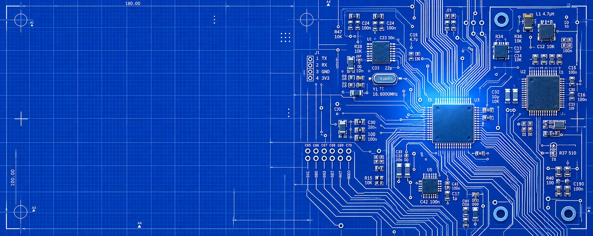

<!doctype html>
<html lang="en">
  <meta charset="utf-8" /><title>Signal Path trace picker</title>
  <style>
    body {
      margin: 0;
      background: #050d26;
      color: #d4e8ff;
      font: 14px monospace;
    }
    header {
      padding: 16px;
      position: sticky;
      top: 0;
      background: #050d26;
    }
    button,
    select {
      font: inherit;
      margin: 0 8px;
      padding: 8px;
    }
    figure {
      position: relative;
      margin: 0;
    }
    img {
      display: block;
      width: 100%;
    }
    svg {
      position: absolute;
      inset: 0;
      width: 100%;
      height: 100%;
      pointer-events: none;
    }
    output {
      white-space: pre-wrap;
    }
  </style>
  <header>
    Click copper bends in order.
    <select id="crop">
      <option value="hero-bg">Desktop</option>
      <option value="hero-bg-mobile">Mobile</option></select
    ><button id="reset">Reset</button><output id="coordinates"></output>
  </header>
  <figure>
    <svg id="overlay">
      <polyline id="route" fill="none" stroke="#ffe568" stroke-width="2" />
    </svg>
  </figure>
  <script>
    const points = [],
      art = document.querySelector("#art"),
      overlay = document.querySelector("#overlay"),
      route = document.querySelector("#route"),
      output = document.querySelector("#coordinates");
    function reset() {
      points.length = 0;
      route.setAttribute("points", "");
      output.textContent = "";
    }
    art.onload = () =>
      overlay.setAttribute("viewBox", `0 0 ${art.naturalWidth} ${art.naturalHeight}`);
    art.onclick = (event) => {
      const rect = art.getBoundingClientRect(),
        x = Math.round(((event.clientX - rect.left) * art.naturalWidth) / rect.width),
        y = Math.round(((event.clientY - rect.top) * art.naturalHeight) / rect.height);
      points.push([x, y]);
      route.setAttribute("points", points.map((p) => p.join(",")).join(" "));
      output.textContent = `u=${(x / art.naturalWidth).toFixed(4)}, v=${(y / art.naturalHeight).toFixed(4)}\nM${points.map((p) => p.join(" ")).join(" L")}`;
      console.log({ x, y, u: x / art.naturalWidth, v: y / art.naturalHeight });
    };
    document.querySelector("#reset").onclick = reset;
    document.querySelector("#crop").onchange = (event) => {
      reset();
      art.src = `../public/images/${event.target.value}.webp`;
    };
  </script>
</html>
